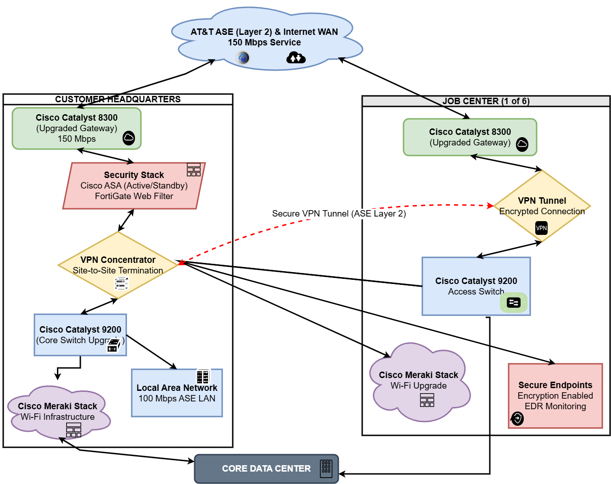

Moving infrastructure to the cloud isn't a switch you flip — it's a phased program that requires careful planning, security hardening, and a clear path back if something goes wrong. Our cloud practice migrates your 34 on-premise virtual machines to a co-located facility hardened to CIS Level 1 benchmarks, transitions your 276 users to Microsoft 365 for productivity and communication, and replaces your end-of-life NEC PBX with Microsoft Teams Phone. Every workload is evaluated for SSO, MFA, and compliance certification before it moves.
Our engineers execute the migration plan with minimal disruption to your team — staged rollouts, clearly defined change windows, and rollback plans documented at every step. We document everything as we go so you always know what was done, by whom, and when.
Every cloud workload is migrated with a documented runbook, tested in a staging environment, and validated against a defined acceptance checklist before production cutover. Nothing goes live without sign-off.
All 34 on-premise virtual machines are migrated to a co-located data center facility in a phased program. Each VM is hardened to CIS Level 1 benchmarks before cutover, with firewall rules, patch levels, and audit logging validated against the security baseline. Rollback procedures are documented and tested for every workload before the migration window opens.
Full Microsoft 365 Business Premium deployment for all 276 users — Exchange Online for email, SharePoint Online for document management, and Microsoft Teams for chat and video collaboration. Mailbox migration is executed with zero data loss using staged cutover with overlap periods. SharePoint sites are structured per team and department, with permissions aligned to your org chart and onboarded through Azure AD groups.
Your end-of-life NEC PBX is replaced with Microsoft Teams Phone, eliminating a standalone phone system and consolidating voice into the Microsoft 365 stack your team already uses. Existing phone numbers are ported, call routing and auto-attendants are configured to match your current setup, and voicemail routes directly to Teams. This removes a separate monthly telecom contract and brings phone calls into the same audit and compliance framework as your email.
Azure Active Directory is the identity backbone for all cloud and on-premise resources. Conditional access policies enforce MFA on every external login and restrict access by device compliance status. All SaaS vendors are evaluated for SAML SSO integration before procurement approval. Role-based access control is defined per job function and enforced through Azure AD groups, so permissions follow people — not individual accounts.

All 34 VMs migrated to a Tier III co-location facility, hardened to CIS Level 1 benchmarks with validated patch levels and audit logging on every workload.
Microsoft 365 delivers email, Teams, and SharePoint for all 276 users, with identity and access centrally managed through Azure AD. Conditional access policies enforce MFA on every login from outside the corporate network.
Teams Phone replaces the NEC PBX system entirely, consolidating voice, video, and messaging into a single platform with full call-recording and compliance capabilities built in.
Talk to our cloud engineer about a phased migration plan built for your environment, your timeline, and your budget.
Get Started via Portal